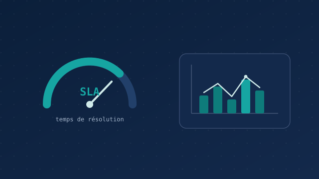

Analyse automatisée des SLA
Transformer un suivi manuel et chronophage en quelques secondes de calcul automatique.

Le problème
Les SLA (Service Level Agreements) fixent des engagements sur les délais de traitement des incidents. Les suivre est essentiel, mais le faire à la main est long, répétitif et source d'erreurs — et difficile à reproduire chaque période.
Ma solution
J'ai développé un script Python qui récupère les données d'incidents, calcule les indicateurs SLA (respect des délais, dépassements, tendances) et restitue une vue claire et exploitable. Le suivi qui prenait du temps devient quasi instantané et parfaitement reproductible.
Le résultat
- Un outil en production, réellement utilisé par l'équipe.
- Un suivi fiable et homogène, sans retraitement manuel.
- Du temps libéré pour se concentrer sur l'analyse plutôt que sur la collecte.
Ce que j'en retiens
C'est le projet qui illustre le mieux ma philosophie : repérer une tâche manuelle répétitive, et la remplacer par un outil simple, fiable et utile au quotidien. L'automatisation au service des personnes.